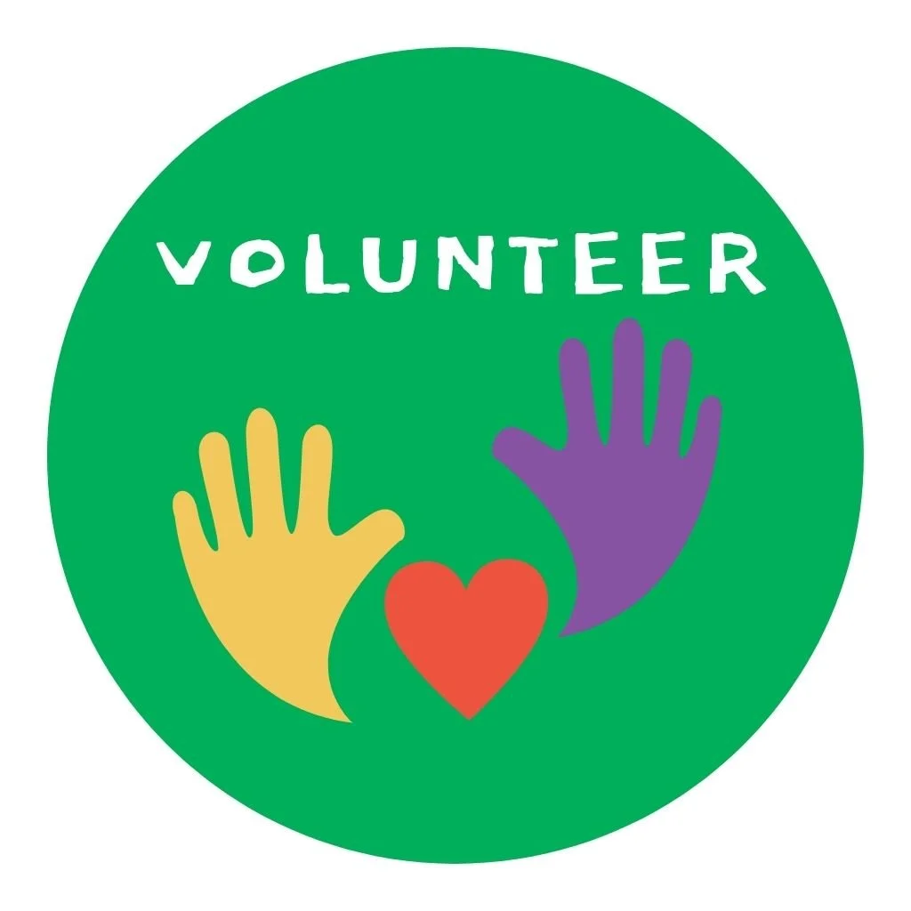
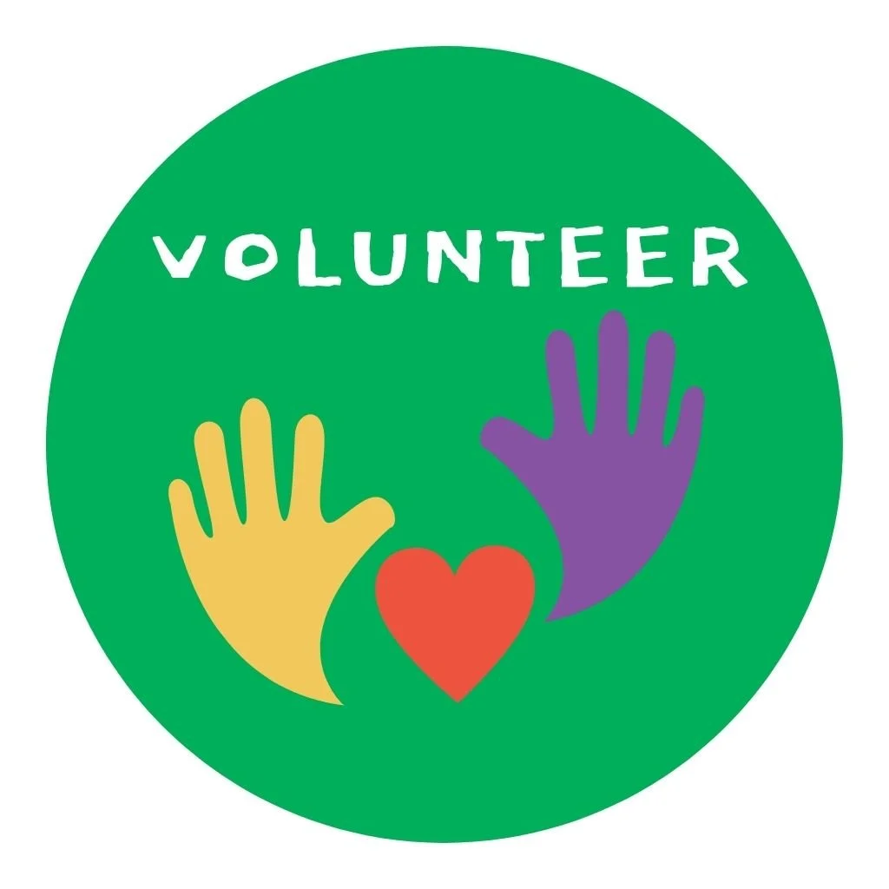

Who We Are
We are a non-profit organization committed to empowering communities through the spirit of volunteering. Established with the belief that everyone has the potential to contribute, we provide opportunities for individuals to take part in meaningful social initiatives. Our organization focuses on education, healthcare, environmental conservation, and community development projects.
Over the years, we have connected thousands of volunteers with causes that truly matter. From organizing free tutoring sessions for underprivileged children, to tree-planting campaigns, to health awareness workshops in rural areas — our volunteers are at the heart of everything we do.
What makes us different is our dedication to building long-lasting impact. We believe that volunteering is not only about helping others, but also about personal growth, developing empathy, and creating networks of people who genuinely care about change.
By joining us, you are not just signing up for a single activity — you are becoming part of a movement that believes small acts of kindness can transform society. Together, we aim to build a world where compassion, solidarity, and cooperation are the foundation of stronger communities.

 
